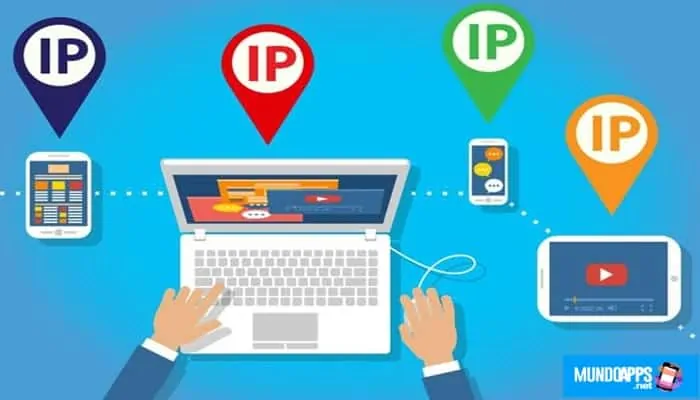

Las direcciones IPv4 tienen una longitud de 32 bits, que permite un máximo de 4 294 967 296 (232) direcciones únicas. Las direcciones IPv6 son de 128 bits, lo que permite 3,4 x 1038 (2128) direcciones únicas. No obstante, el conjunto total de direcciones utilizables en ambas versiones es menor a causa de una serie de direcciones reservadas y otros aspectos a considerar.
Las direcciones IP son números binarios, pero, generalmente, se expresan en forma decimal (IPv4) o hexadecimal (IPv6) para facilitar su lectura y uso por parte de los humanos.Como ya hemos dicho, IP significa «protocolo de internet» y describe un conjunto de estándares y requisitos para crear y transmitir paquetes de datos (o datagramas) entre las redes. El protocolo de internet (IP) es parte de la capa de internet del conjunto de protocolos de internet. En el modelo OSI, la IP se consideraría parte de la capa de red. Tradicionalmente, IP se usa junto con un protocolo de nivel superior, de los cuales el más frecuente es TCP. El estándar IP está regido por la especificación RFC 791.
